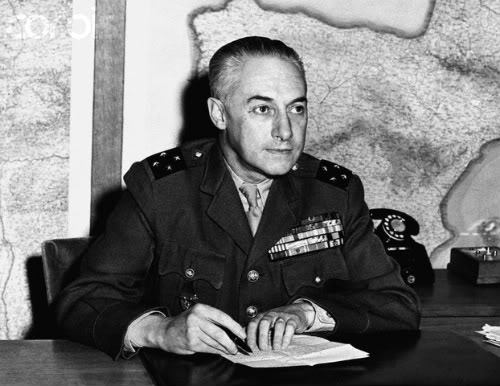
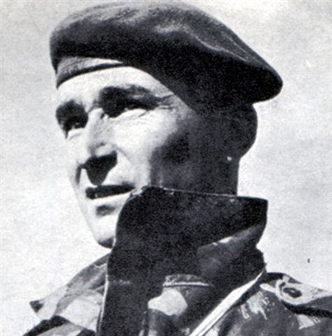

Lời Giới Thiệu
Cách đây 50 năm, nhân dân và các lực lượng vũ trang ta dưới sự lãnh đạo sáng suốt của Đảng Cộng sản Việt Nam và sự chỉ huy trực tiếp của Đại tướng Võ Nguyên Giáp đã thu được những thắng lợi vĩ đại, có tính chất quyết định tại Điện Biên Phủ, chấm dứt ách thống trị kéo dài hàng thế kỷ của thực dân Pháp, mở đầu kỷ nguyên đánh bại chủ nghĩa thực dân cũ và tiếp đó là chủ nghĩa thực dân mới ở Việt Nam và toàn thế giới. Thảm bại của Pháp ở Điện Biên Phủ gắn liền với số phận bất hạnh và sự nghiệp hẩm hiu của Đại tướng Pháp Henri Navarre, người bắt đầu được giữ chức Tổng tư lệnh các lực lượng vũ trang Pháp ở Đông Dương hồi đầu tháng 5 năm 1953 và đúng một năm sau thì gặp thất bại lớn nhất trong cuộc đời tại Điện Biên Phủ.

Général Henri Navarre
Liền sau đó, tưởng Navarre đã liên tiếp cho xuất bản tới ba cuốn sách có tính chất hồi ký về Điện Biên Phủ. Tuy nhiên, tất cả những cuốn sách này, tuy cung cấp nhiều tư liệu bổ ích, nhưng đều mang nội dung biện bạch, bào chữa. Ngay cả cuốn cuối cùng, mang tên “Thời điểm của những sự thật” xuất bản năm 1979, sau khi đã nghỉ hưu, viết trong khung cảnh ngoài vòng cương tỏa, vẫn bị nhiều nhà phê bình nhận xét là "chưa nói hết và chưa nói đúng sự thật”.
Trong khi đó, đại úy Jean Pouget sau này là thiếu tá, sĩ quan tùy tùng kiêm thư ký riêng của tướng Henri Navarre sau khi chiến dịch Điện Biên Phủ kết thúc, đã bỏ ra hàng chục năm sưu tầm tài liệu gặp gỡ nhân chứng, hệ thống lại những hồi tưởng, hoàn thành cuuốn “Nous étions à Diên Biên Phu” do nhà xuất bản Presses de la Cité - Paris - xuất bản năm 1964, được dư luận đánh giá cao.

Jean Pouget
Jean Pouget đã tới Việt Nam từ năm 1946 với cấp bậc trung úy, được chứng kiến những trận đánh đầu tiên của cuộc chiến tranh Việt- Pháp (1946- 1954). Sau khi trở về Pháp với cấp bậc đại úy, Jean Pouget lại được cử tới Việt Nam lần thứ hai trong cùng một chuyến bay với tướng Navarre từ Paris tới Hà Nội. Sau một thời gian dài làm thư ký riêng cho tướng Navarre, được dự những cuộc họp quan trọng, được giữ các tài liệu tuyệt mật, đến tháng 4 năm 1954, Pouget nhảy dù xuống Điện Biên Phủ, trực tiếp tham gia các trận đánh cuối cùng, và cũng là những trận đánh ác liệt nhất trên đồi A1.

Trong lần xuất bản đầu tiên, nhà xuất bản Presses de la Cité đã trân trọng giới thiệu: "Thiếu tá Jean Pouget là người từng trải qua những giờ phút nghiêm trọng nhất của cuộc chiến tranh Đông Dương, từ cơ quan Bộ Tổng tư lệnh đền tận mũi nhọn của trận chiến đã trình bày lại một cách đầy đủ nhất, sâu sắc nhất vấn đề mà cho tới nay chưa có một cuốn sách nào thể hiện rõ như vậy. Nhiều bài báo đã bình luận: Jean Pouget không chỉ viết những gì tướng Navarre tuyên bố công khai mà còn tiết lộ những điều tướng Navarre viết trong báo cáo mật và cả những lời bộc lộ riêng tư thầm kín, do đó đã cung cấp với người đọc nhiều sự thật bổ ích về Điện Biên Phủ
Xin trân trọng giới thiệu cùng bạn đọc.
Nhà xuất bản Công an Nhân dân